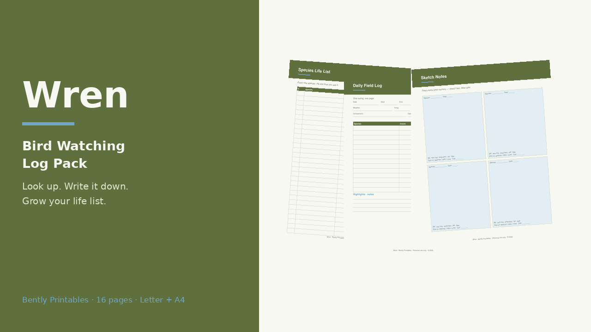

Free: Daily bird field log
One printable US Letter page — date, weather, habitat, and a species table with counts, behaviour, and a "new?" column. Download below, then grab the full pack when you're ready.
Full pack (16 pages, Letter + A4)
- Species life list ×2
- Daily field log ×2
- Location notes with site map sketch
- Seasonal checklist (spring · summer · fall · winter)
- Sketch notes with field-mark prompts
- Year tally
- Blank masters (life list, field log, location, sketch) + notes
Undated and region-free — works with any field guide or app. Bird kindly: keep distance from nests and respect closures.
Purchase: Gumroad.